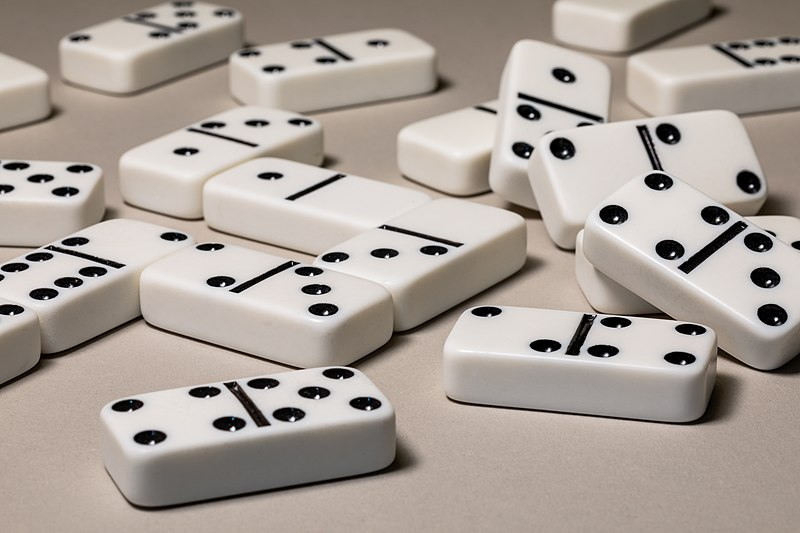

Projet POO#
Objectif#
{kind=link}
Le jeu de dominos est constitué de 28 pièces. Une pièce de domino est en deux parties. Chaque partie contient de 0 à 6 points. Lorsque les deux parties ont le même nombre de points, les dominos sont doubles. Il y a 7 doubles dans un jeu : du double 0 au double 6.
Le jeu se joue de 2 à 4 joueurs.
S’il y a 2 ou 3 joueurs, chaque joueur pioche 7 dominos. Il reste 14 ou 7 dominos dans la pioche.
S’il y a 4 joueurs, chaque joueur pioche 6 dominos. Il reste 4 dominos dans la pioche.
Au début de la partie, le joueur qui a le domino le plus fort commence à jouer en posant un domino sur le tapis. Ensuite, les autres joueurs posent chacun leur tour un domino en les faisant coincider. Si un joueur ne pas jouer, il pioche ou passe son tour si la pioche est vide.
On va représenter ce jeu de dominos en POO. Voici la liste des classes que l’on va utiliser:
La classe
Dominoqui construit un objet domino.La classe
JeuDominoqui construit un objet contenant les 28 dominos.La classe
Tapisqui contient les dominos posés par les joueurs.La classe
Joueur.
La classe Domino#
La classe Domino a un seul attribut valeur et 5 méthodes.

L’attribut valeur est une liste contenant le nombre de points de chaque partie d’un domino.
Les méthodes de cette classe sont:
__init__constructeur qui initialise l’attributvaleuravec une liste dont les valeurs sont passées en paramètres.retournerqui retourne le domino et donc modifie l’attributvaleur.somme_pointsqui renvoie la somme des points du domino.difference_pointsqui renvoie la différence positive des points du domino.__repr__qui affiche le domino. Par exemple[a|b]
On donne ci-dessous le code de la classe à compléter:
class Domino:
def __init__(self,a,b):
self.valeur = ...
def retourner(self):
pass
def somme_points(self):
pass
def difference_points(self):
pass
def __repr__(self):
pass
La classe JeuDomino#
La classe JeuDomino a un seul attribut valeur et 2 méthodes.

L’attribut valeur est une liste contenant les 28 dominos du jeu. Chaque domino est un objet Domino.
Les méthodes de cette classe sont:
__init__constructeur qui initialise l’attributdominosavec une liste dont les valeurs sont les 28 dominos du jeu.jouablequi retourne un booléen pour savoir si la partie est jouable. Cela signifie :La partie est encore jouable si la pioche est non vide, les joueurs ont encore des dominos et qu’ils peuvent en poser au tapis.
La partie n’est plus jouable, donc finie, si la pioche est vide, un joueur a posé tous ses dominos ou aucun joueur ne peut poser de dominos.
On donne ci-dessous le code de la classe à compléter:
class JeuDomino:
def __init__(self):
self.dominos = ...
def jouable(self,tapis,joueurs):
pass
La classe Joueur#
La classe Joueur a 4 attributs et 7 méthodes.
{kind=link}
L’attribut
nomcontient le nom du joueurL’attribut
dominosest une liste qui contient les dominos du joueurL’attribut
dominos_jouablesest une liste qui contient les dominos que le joueur peut poser sur le tapis.L’attribut
somme_pointsest un nombre entier égal à la somme des points des dominos du joueur.
Les méthodes de cette classe sont:
__init__constructeur qui initialise les attributs.est_videqui retourne un booléen pour savoir si le joueur a encore des dominos dans son jeu.calculer_pointsmodifie l’attributsomme_pointset retourne la somme des points des dominos du joueur.piocherajoute un domino au joueur. La pioche est l’attributdominosde la classeJeuDomino.poserajoute au tapis un domino du joueur en faisant correspondre les points des dominos accolés.jouablemodifie l’attributdominos_jouableset retourne la liste des dominos du joueur suceptibles d’être posés au tapis.domino_fortretourne le domino qui a la plus grande valeur parmi une liste de dominos. La plus forte valeur d’un domino peut être déterminée par la plus grande somme des points d’un domino et en même temps la plus petite différence entre les points.
On donne ci-dessous le code de la classe à compléter:
class Joueur:
def __init__(self,nom):
self.nom = ...
self.dominos = ...
self.dominos_jouables = ...
self.somme_points = 0
def est_vide(self):
pass
def calculer_points(self):
pass
def piocher(self,jeu):
pass
def poser(self,tapis,domino):
pass
def jouable(self,tapis):
pass
def domino_fort(self,dominos):
pass
La classe Tapis#
La classe Joueur a 1 attribut dominos et 6 méthodes.
{kind=link}
L’attribut dominos contient les dominos posés par les joueurs.
Les méthodes de cette classe sont:
__init__constructeur qui initialise l’attributdominospar une liste vide.est_videqui retourne un booléen pour savoir si le tapis est vide ou non.a_gauchequi retourne le domino situé à gauche du tapis.a_droitequi retourne le domino situé à droite du tapis.inserer_gauchequi ajoute un domino à gauche sur le tapis.inserer_droitequi ajoute un domino à droite au tapis.
On donne ci-dessous le code de la classe à compléter:
class Tapis:
def __init__(self):
self.dominos = ...
def est_vide(self):
pass
def a_gauche(self):
pass
def a_droite(self):
pass
def inserer_gauche(self,domino):
pass
def inserer_droite(self,domino):
pass
Le programme principal#
Le programme doit dérouler une partie de dominos entre des joueurs jusqu’à avoir un gagnant.
Voici quelques remarques sur ce programme:
Créer des joueurs. On peut se limiter à 2 joueurs (au moins au début)
Créer un jeu de dominos (partie)
Créer un tapis pour le jeu
Une boucle de jeu se déroule tant que la partie est jouable:
Les joueurs posent leurs dominos chacun leur tour
Si un joueur ne peut pas jouer, il pioche ou passe son tour si la pioche est vide
Si un des joueurs n’a plus de dominos, la partie s’arête
Si les joueurs ne peuvent plus poser de dominos ni piocher, la partie s’arête
A la fin de la partie, on affiche le gagnant. Si les joueurs ont encore des dominos mais ne pauvent plus joueur ni piocher, le vainqueur est celui qui a le plus petit nombre de points avec ces dominos.
Pendant le déroulement du jeu, on effectuera des affichages. Par exemple :
Le nom du joueur qui joue
Le tapis après qu’un ait joué
Les dominos de chaque joueur
Il est possible de proposer d’autre méthodes et d’autres attributs pour réaliser ce jeu mais il faudra être en mesure de justifier les choix et surtout les raisons de ces choix.